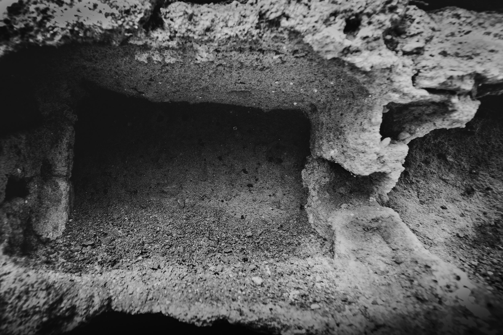
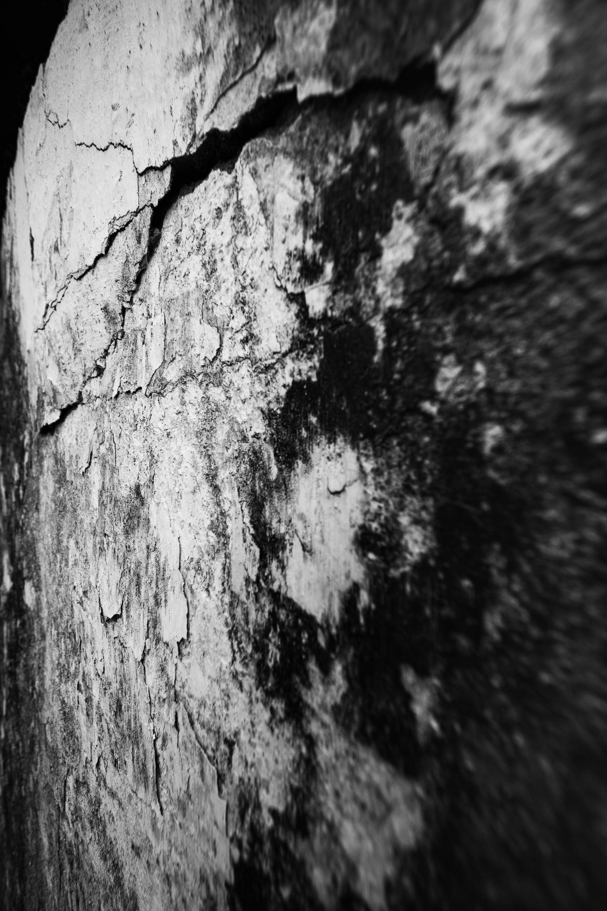
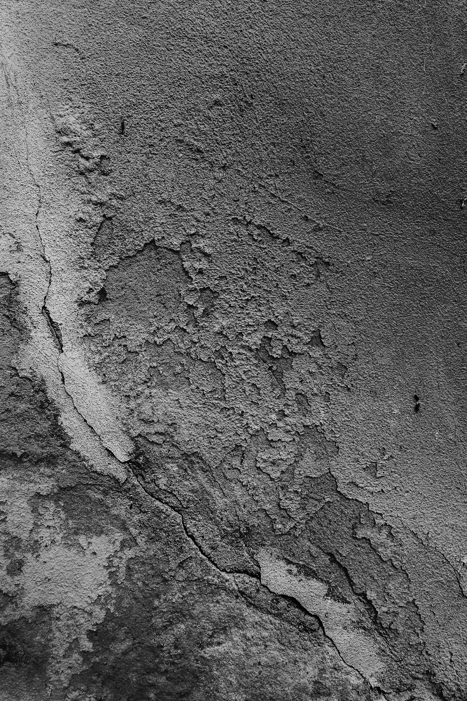
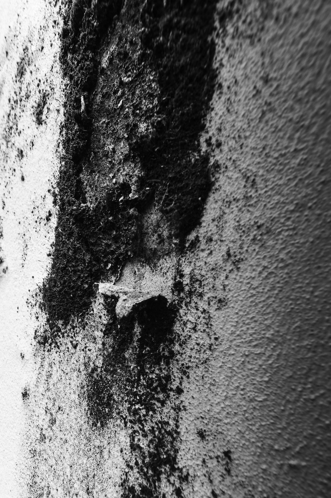
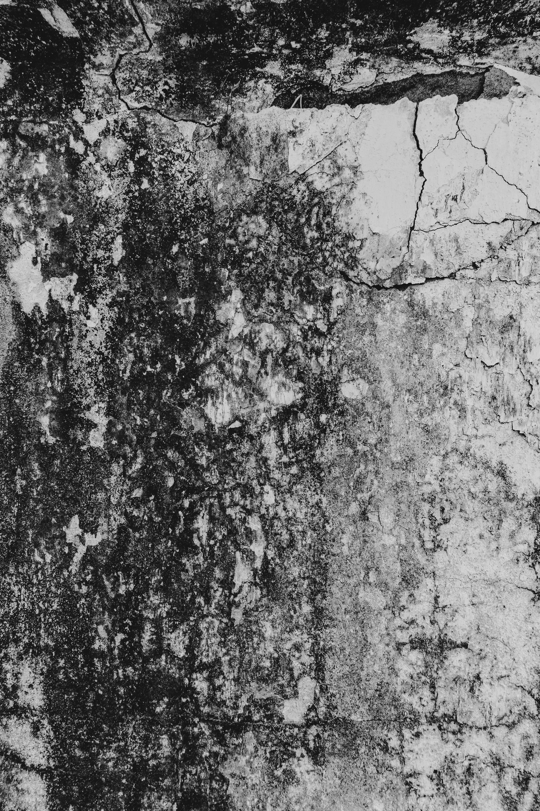
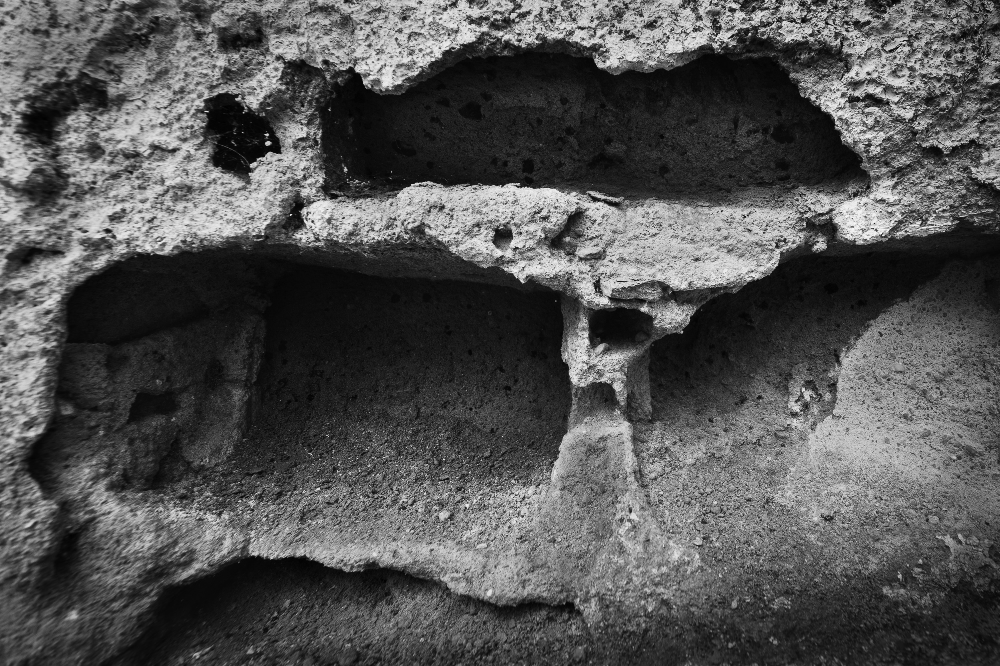
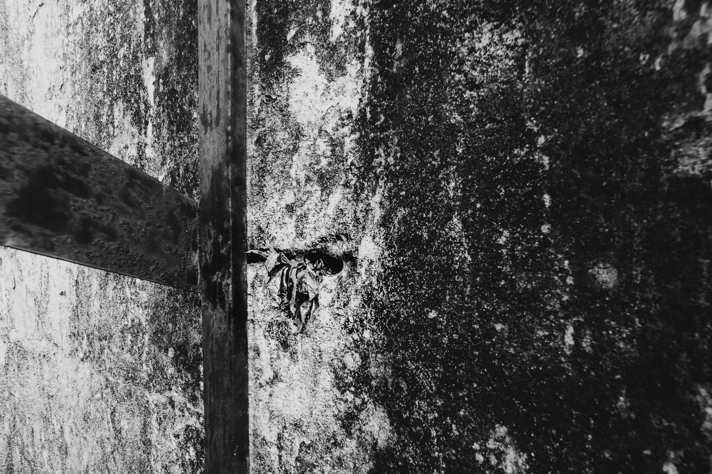
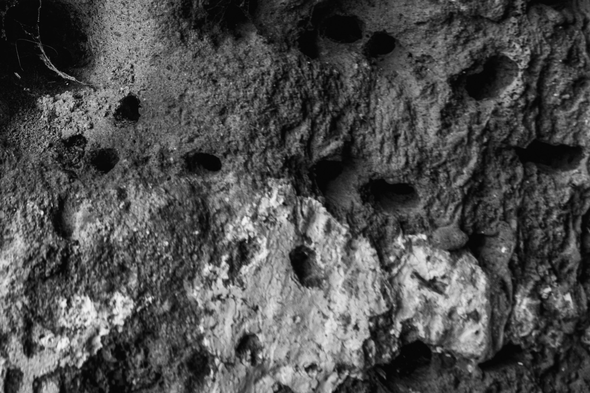

Estas imagens não descrevem um lugar.
Acompanham o tempo que o atravessa.








Estas imagens não descrevem um lugar. Permanecem nele.
A superfície — fissuras, erosões, vestígios — não surge como objeto, mas como campo. Um espaço onde o tempo atua sem intenção de ser visto.
Não há narrativa. Há cortes, aproximações, interrupções.
As imagens colidem. Recusam continuidade. O que emerge é uma presença instável.
Trabalho sobre aquilo que resiste à forma. Aquilo que permanece quando a estrutura falha.
A fotografia aqui não fixa. Acompanha.